Ấn phẩm số · Tháng 11/2026 · Đang mở…
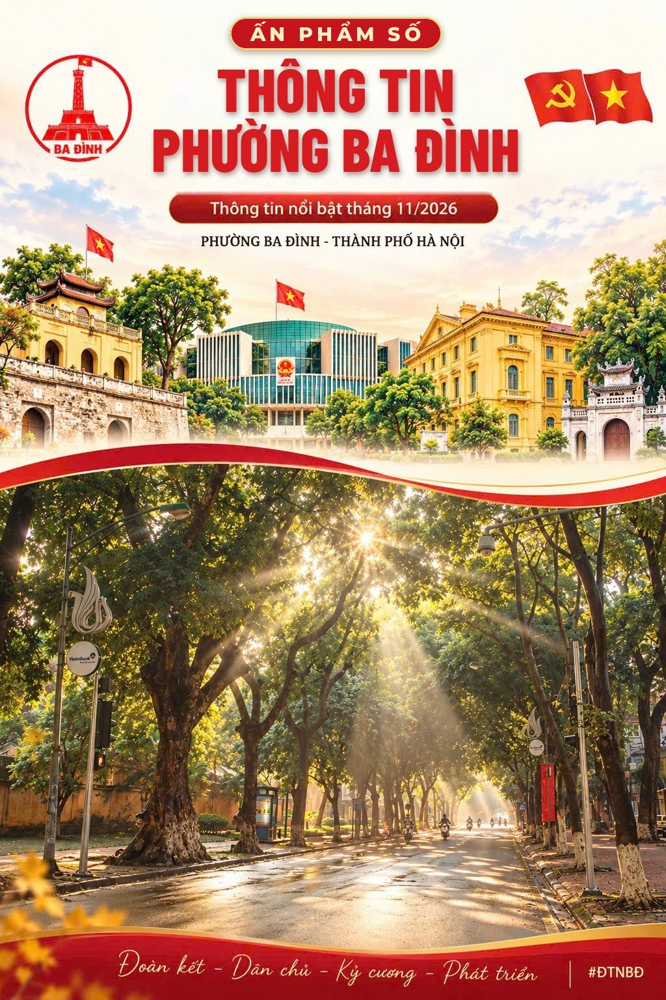
Tháng 11/2026 đánh dấu tròn một năm Bản tin phường Ba Đình chính thức ra mắt, với 12 số phát hành, từng bước khẳng định vai trò là kênh thông tin phản ánh toàn diện các hoạt động chính trị, kinh tế, văn hóa, xã hội và nhịp sống của địa phương.
Tiếp nối hành trình ấy, Ban Biên tập chính thức ra mắt Ấn phẩm số “Thông tin phường Ba Đình”, phát hành song song với Bản tin phường Ba Đình, mở ra một phương thức truyền tải thông tin mới trên không gian số.
Với hình thức thể hiện hiện đại, trực quan, sinh động, “Thông tin phường Ba Đình” hướng tới mang đến góc nhìn đa chiều, có chiều sâu về những sự kiện, hoạt động nổi bật trong tháng; lan tỏa những mô hình hay, cách làm sáng tạo, những giá trị tốt đẹp và dấu ấn đổi mới của phường.
Trong không khí thi đua chào mừng kỷ niệm 72 năm Ngày Giải phóng Thủ đô, ngày 08/10, phường Ba Đình tổ chức Hội nghị biểu dương điển hình tiên tiến, “Người tốt, việc tốt” năm 2026. Tại Hội nghị, 26 cá nhân đã được Chủ tịch UBND phường tặng danh hiệu “Người tốt, việc tốt”. Các tấm gương được vinh danh không nằm ở những thành tích lớn lao, mà trước hết ở tinh thần trách nhiệm và những việc làm cụ thể, thiết thực. Đó là sự tận tụy trong công việc, trách nhiệm với Nhân dân; tích cực tham gia các hoạt động cộng đồng; đóng góp cho công tác an sinh xã hội, giữ gìn an ninh trật tự, xây dựng đời sống văn hóa hay những nỗ lực trong giáo dục và các hoạt động xã hội, nhân đạo.
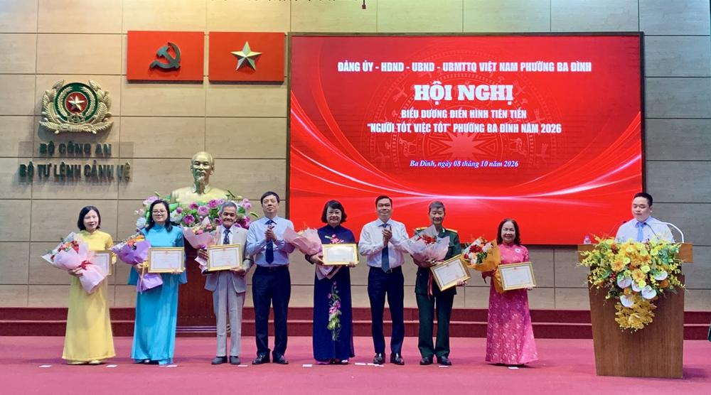
Cũng trong dịp này, UBND phường đã khởi công dự án tu bổ, tôn tạo di tích đình Tây Luông và dự án chỉnh trang phố Phan Đình Phùng, cải tạo vườn hoa góc Yên Phụ - Hàng Than và đầu tư các công trình trường học, hạ tầng đô thị, góp phần nâng cao chất lượng không gian sống và diện mạo đô thị trên địa bàn.
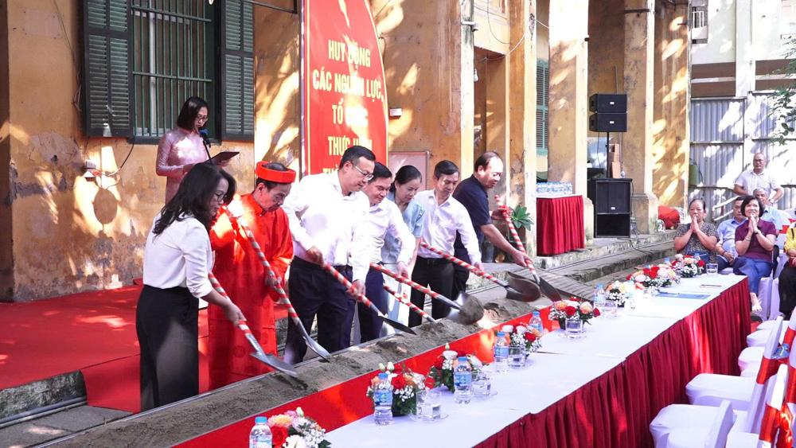
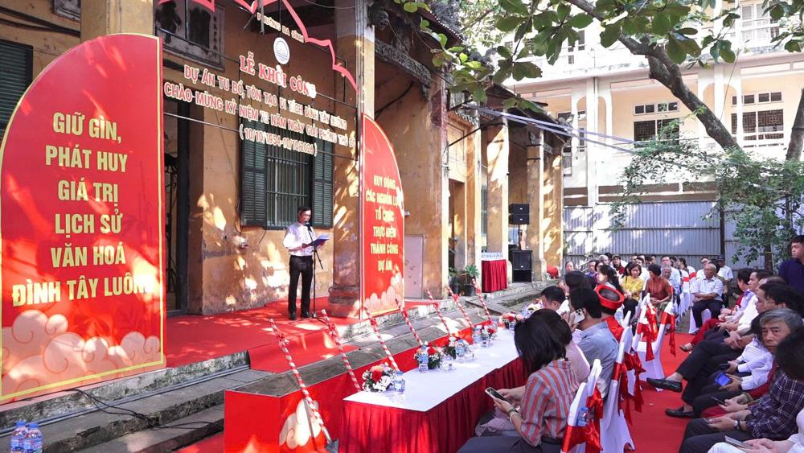
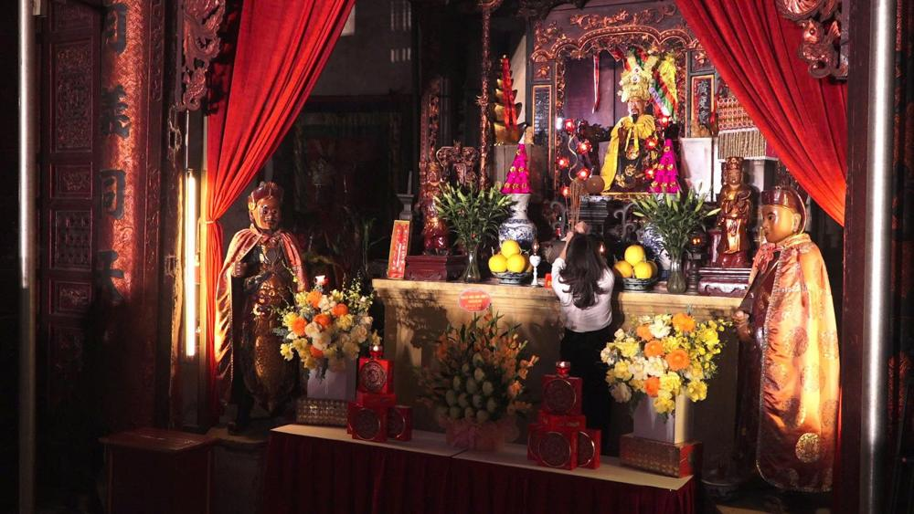
Kỷ niệm 80 năm Ngày truyền thống Lực lượng vũ trang Thủ đô (19/10/1946 – 19/10/2026), ngày 15/10, Đảng ủy - HĐND - UBND - UB MTTQ Việt Nam phường tổ chức tọa đàm “80 năm vinh quang, tự hào người chiến sĩ Thủ đô”, gặp mặt cán bộ, quân nhân, viên chức quốc phòng đã nghỉ hưu, nghỉ công tác trên địa bàn. Tại chương trình, các đại biểu xem phim tư liệu về truyền thống 80 năm xây dựng, chiến đấu và trưởng thành của LLVT Thủ đô.
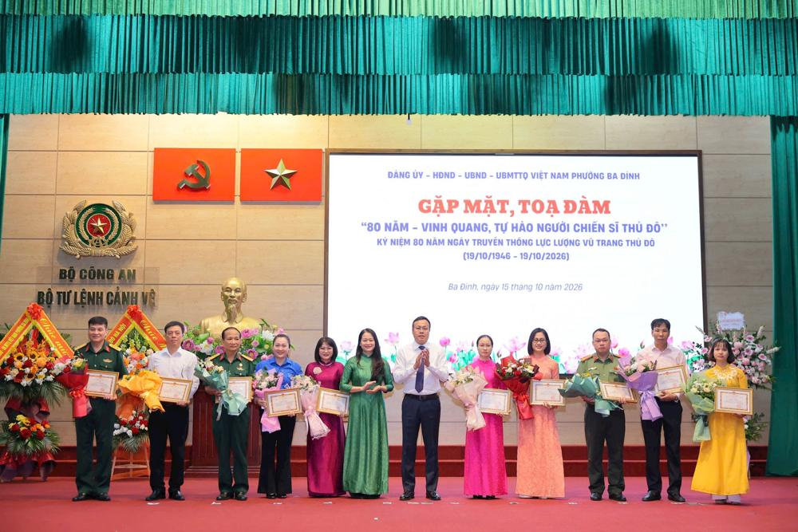
Tham gia, tọa đàm với nhân chứng lịch sử: đồng chí Nguyễn Văn Độ - chiến sĩ phòng không trực tiếp tham gia chiến đấu bảo vệ Hà Nội trong 12 ngày đêm tháng 12/1972; bà Vũ Thị Nghĩa - Thượng tá Quân đội nhân dân Việt Nam đã nghỉ hưu; và bạn Lê Nguyễn Bình An - Phó Bí thư Đoàn trường THPT Phan Đình Phùng, cùng ôn lại những năm tháng chiến đấu gian khổ, chia sẻ những câu chuyện, kỷ niệm sâu sắc về tinh thần chiến đấu kiên cường, ý chí quyết tâm bảo vệ Thủ đô của các thế hệ cán bộ, chiến sĩ. Qua đó, góp phần giáo dục truyền thống yêu nước, khơi dậy niềm tự hào dân tộc, bồi đắp bản lĩnh chính trị, ý thức trách nhiệm cho cán bộ, chiến sĩ và thế hệ trẻ trong sự nghiệp xây dựng, bảo vệ Tổ quốc hiện nay.
Nhân dịp này, UBND phường trao Giấy khen tặng 10 tập thể có thành tích xuất sắc trong các hoạt động chào mừng kỷ niệm.
Theo Nghị quyết số 29/NQ-HĐND ngày 24/9/2026 của HĐND phường, từ ngày 01/10, UBND phường có 5 phòng chuyên môn gồm: Văn phòng HĐND và UBND phường, phòng Nội vụ - Tư pháp, phòng Văn hóa - Xã hội, phòng Kinh tế và phòng Hạ tầng - Đô thị - Môi trường. Tại hội nghị, lãnh đạo phường đã trao quyết định thành lập và bổ nhiệm lãnh đạo các phòng. Lãnh đạo Đảng ủy, HĐND và UBND phường Ba Đình cũng chứng kiến lễ ký biên bản bàn giao nhiệm vụ giữa các phòng chuyên môn của UBND phường sau sắp xếp.
Ngày 9/10, Đảng ủy phường tổ chức hội nghị công bố các quyết định về sắp xếp tổ chức Đảng trực thuộc. Tại hội nghị, đồng chí Trưởng ban Xây dựng Đảng phường đã công bố Quyết định của Ban Thường vụ Đảng ủy phường về kết thúc hoạt động của Đảng bộ các cơ quan Đảng và Đảng bộ UBND phường, đồng thời thành lập 14 chi bộ trực thuộc theo mô hình mới. Việc sắp xếp tăng cường sự lãnh đạo trực tiếp, toàn diện của Đảng ủy phường đối với các đảng bộ, chi bộ đáp ứng yêu cầu nhiệm vụ trong tình hình mới.
Ngày 21/10, Tổ đại biểu số 2 HĐND thành phố Hà Nội phối hợp với Thường trực HĐND phường Ba Đình tổ chức giám sát việc triển khai các chỉ tiêu, nhiệm vụ phát triển kinh tế - xã hội năm 2026 trên địa bàn phường. Theo báo cáo, UBND phường được giao 725 nhiệm vụ thuộc 14 lĩnh vực quản lý nhà nước, trong đó 463 nhiệm vụ thuộc thẩm quyền phường và 262 nhiệm vụ do thành phố giao. Tính đến hết tháng 9/2026, phường đã hoàn thành 126 nhiệm vụ thành phố giao năm 2026; trong đó, 123 nhiệm vụ được hoàn thành trước ngày 10/9.
Thời gian tới, UBND phường tiếp tục rà soát các nhiệm vụ còn lại, tập trung tháo gỡ khó khăn, vướng mắc trong công tác giải phóng mặt bằng, đẩy nhanh tiến độ đầu tư công, nâng cao hiệu quả quản lý đô thị, hoàn thiện dữ liệu và cải cách thủ tục hành chính; phấn đấu hoàn thành các chỉ tiêu, nhiệm vụ phát triển kinh tế - xã hội năm 2026.
Chiều 20/10, Đảng ủy phường tổ chức hội nghị công bố Quyết định về việc kiện toàn Ban Chỉ đạo phát triển khoa học, công nghệ, đổi mới sáng tạo và chuyển đổi số phường (Ban Chỉ đạo 57), đồng thời bàn giao nhiệm vụ Cơ quan Thường trực từ Văn phòng Đảng ủy sang Công an phường. Tại hội nghị, hai cơ quan đã ký biên bản bàn giao, tiếp nhận hồ sơ, tài liệu, văn bản chỉ đạo, kế hoạch, báo cáo và các nhiệm vụ đang triển khai. Việc chuyển giao nhằm bảo đảm công tác tham mưu, điều phối và triển khai các nhiệm vụ chuyển đổi số được liên tục, thống nhất, không gián đoạn.
Ngày 15-10, Đảng ủy, HĐND, UBND phường tổ chức hội nghị đối thoại giữa Bí thư Đảng ủy, Chủ tịch HĐND, Chủ tịch UBND phường với Ủy ban MTTQ Việt Nam, các tổ chức chính trị - xã hội và đại diện nhân dân, thanh niên trên địa bàn.
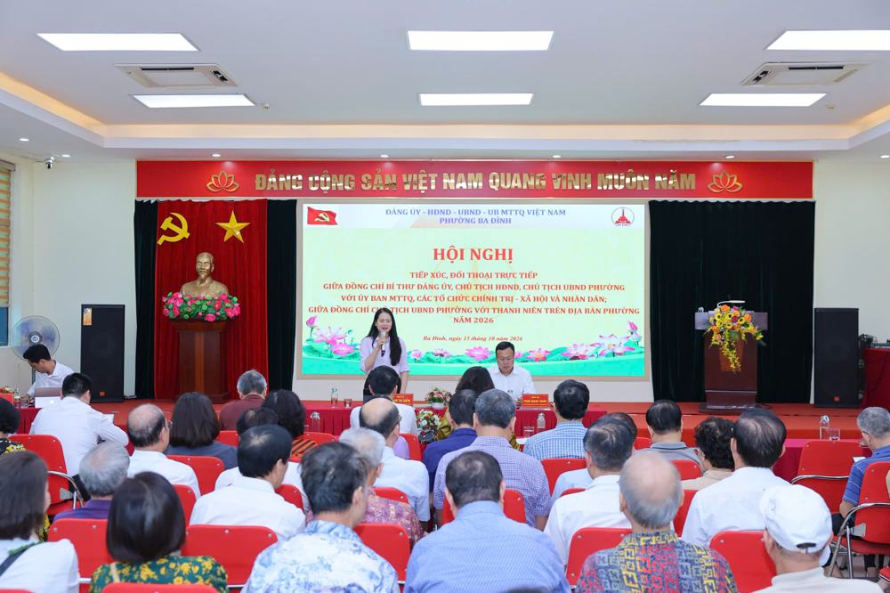
Hội nghị ghi nhận nhiều ý kiến, kiến nghị về giải quyết những vấn đề dân sinh, hạ tầng đô thị, an ninh trật tự và cải cách hành chính; đề xuất xây dựng kênh hỏi đáp trực tuyến, chatbot cung cấp thông tin chính thống. Chủ tịch UBND phường tiếp thu, giao rà soát, phối hợp giải quyết các kiến nghị thuộc thẩm quyền.
Kết luận hội nghị, đồng chí Phạm Quang Thanh, Ủy viên Ban Thường vụ Thành ủy, Bí thư Đảng ủy, Chủ tịch HĐND phường nhấn mạnh yêu cầu gắn đối thoại với kết quả giải quyết kiến nghị, xác định rõ trách nhiệm, triển khai đồng bộ các giải pháp tháo gỡ 5 điểm nghẽn, nâng cao hiệu quả quản lý đô thị và chất lượng cuộc sống nhân dân.
Căn cứ kế hoạch bồi dưỡng cán bộ năm 2026, sáng 29/9, Ban Xây dựng Đảng phường phối hợp Trung tâm Chính trị phường tổ chức tập huấn nghiệp vụ công tác tổ chức xây dựng Đảng cho cấp ủy các đảng bộ, chi bộ. Nội dung tập trung quán triệt những điểm mới của Quy định số 208-QĐ/TW và Hướng dẫn số 02-HD/TW về thi hành Điều lệ Đảng.
Cùng ngày, HĐND phường phối hợp với Phòng Thông tin - Dân nguyện thuộc Đoàn đại biểu Quốc hội và HĐND thành phố tổ chức tập huấn chuyển đổi số cho đại biểu HĐND phường. Các đại biểu được hướng dẫn khai thác kho dữ liệu dân cử dùng chung, sổ tay tài liệu chuyển đổi số HĐND phường, cách sử dụng ứng dụng iHĐND truy cập qua VNeID mức độ 2 để thực hiện và theo dõi hoạt động HĐND, các Ban HĐND và đại biểu HĐND phường.
Thông qua tập huấn, cấp ủy của đảng bộ, chi bộ, đại biểu HĐND phường được cập nhật kiến thức, nâng cao kỹ năng, ứng dụng hiệu quả công nghệ số, quy định của Điều lệ Đảng vào thực hiện nhiệm vụ tại cơ sở.
Chiều 9/10, Ban Thường vụ Đảng ủy phường tổ chức hội nghị bàn giao, tiếp nhận Chi bộ Công ty cổ phần Tập đoàn Đầu tư Ba Đình (CT23) từ Đảng ủy phường Cửa Nam về trực thuộc Đảng bộ phường Ba Đình. Chi bộ CT 23 với 17 đảng viên được chuyển giao trực thuộc Đảng ủy Doanh nghiệp phường.
Ngày 17/10, phường Ba Đình tổ chức lễ hội kỷ niệm ngày hóa Đức Thánh Huyền Thiên Trấn Vũ tại đền Quán Thánh, nhằm tưởng nhớ công đức Đức Thánh, gìn giữ phong tục truyền thống và giáo dục thế hệ trẻ đạo lý “Uống nước nhớ nguồn”. Điểm nhấn của lễ hội năm nay là không gian trưng bày nghệ thuật hoa văn, họa tiết trang trí và chuẩn hóa hệ thống bảng, biển chỉ dẫn, góp phần nâng cao trải nghiệm tham quan, tìm hiểu di tích. Trong khuôn khổ lễ hội, Hội thi bày mâm lễ dâng Đức Thánh thu hút 18 tổ dân phố tham gia, qua đó tiếp tục phát huy giá trị di tích trong đời sống hôm nay.
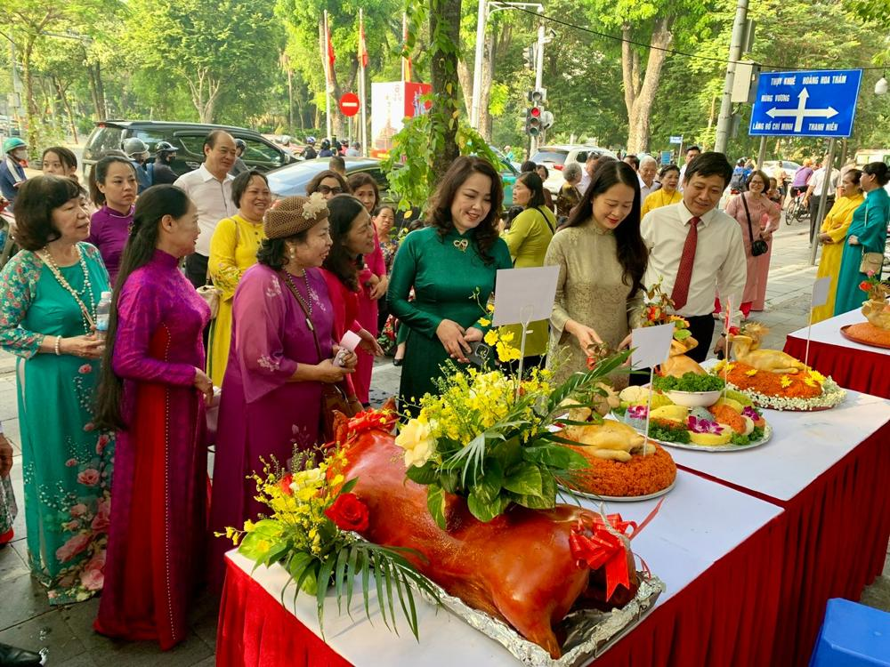
Hưởng ứng Ngày Chuyển đổi số quốc gia và Ngày Chuyển đổi số thành phố Hà Nội, phường triển khai nhiều hoạt động thiết thực nhằm thúc đẩy chuyển đổi số, nâng cao kỹ năng số và đưa các tiện ích công nghệ đến gần hơn với người dân. Phường duy trì hoạt động của 18 Tổ công nghệ số cộng đồng với 285 thành viên, hỗ trợ 100 người dân sử dụng dịch vụ công trực tuyến. Cùng với đó, tổ chức 05 phiên livestream tuyên truyền, quảng bá các giá trị văn hóa, lịch sử và hoạt động trên địa bàn, gồm:
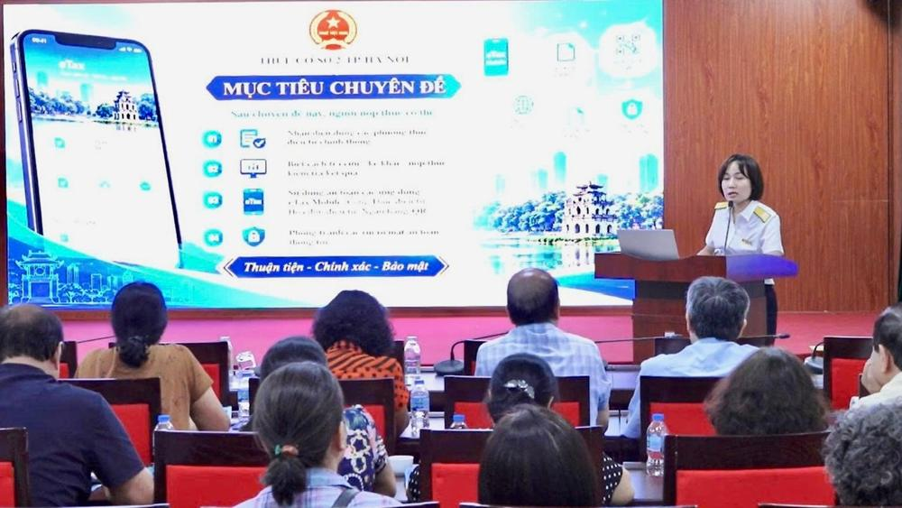
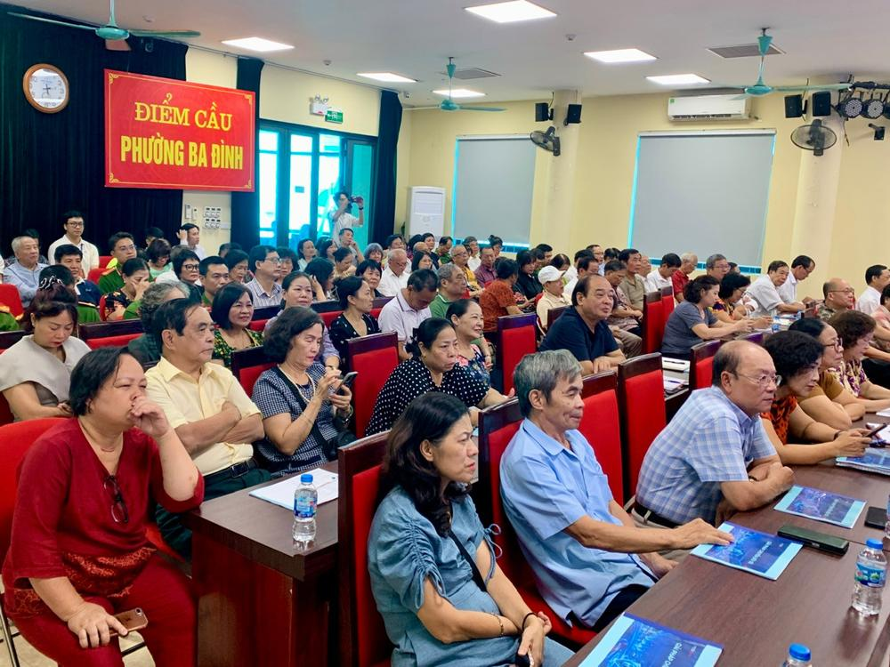
…thu hút 24.200 lượt người xem trực tiếp. Đồng thời, tổ chức trao giải cho 3 tập thể trong Cuộc thi tìm kiếm ý tưởng cải cách hành chính năm 2026.
Tính đến 20/10/2026, thu ngân sách nhà nước trên địa bàn phường tiếp tục ghi nhận kết quả tích cực, với số thu lũy kế đạt hơn 5.566 tỷ đồng, bằng 255,6% dự toán đầu năm. Chi ngân sách đạt hơn 466 tỷ đồng, bằng 90,2% dự toán, bảo đảm nguồn lực thực hiện các nhiệm vụ chính trị. Đáng chú ý, giải ngân vốn đầu tư công đạt 165,508 tỷ đồng, hoàn thành 100% kế hoạch vốn sau điều chỉnh.
Ngày 6/10, UBND phường khai mạc Tuần lễ hưởng ứng học tập suốt đời năm 2026, với chủ đề thúc đẩy làm chủ công nghệ số, trí tuệ nhân tạo, xây dựng xã hội học tập. Các trường học đẩy mạnh giáo dục STEM, kỹ năng số, văn hóa đọc; phường phối hợp cập nhật dữ liệu phổ cập giáo dục và chuẩn bị ra mắt mô hình giáo dục nghệ thuật dân tộc trong trường học vào tháng 11. Trước đó, ngày 4/10, Hội Khuyến học phường tổ chức hội nghị tổng kết phong trào thi đua khuyến học, khuyến tài, xây dựng xã hội học tập năm 2026, vinh danh 52 tập thể, cá nhân tiêu biểu trong phong trào.
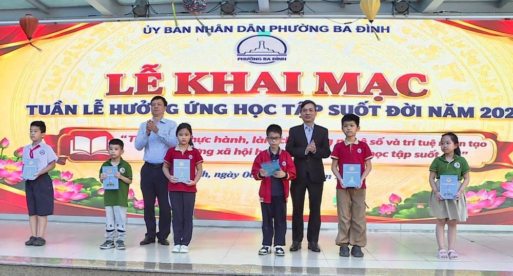
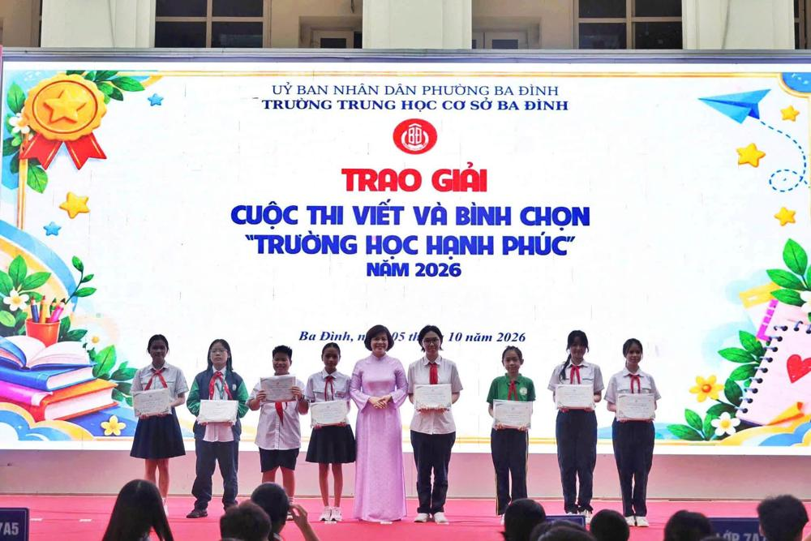
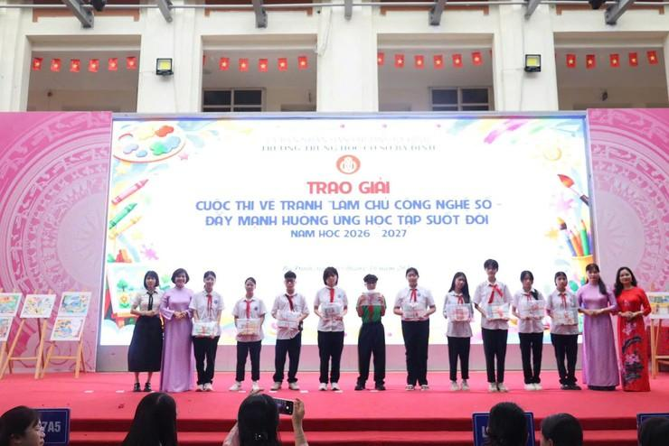
Tháng 10/2026, các lực lượng chức năng phường chủ động nắm chắc tình hình, bảo vệ an toàn các mục tiêu trọng điểm, sự kiện chính trị diễn ra trên địa bàn. Công an phường phối hợp tuyên truyền, vận động, giải quyết 87 lượt đoàn với 736 lượt khiếu kiện tại khu vực A1; triển khai mô hình tuyến đường “Ba nhất” về trật tự an toàn giao thông, trật tự đô thị trên phố Phan Đình Phùng. Tổ chức 08 lượt kiểm tra cơ sở về PCCC; Ra mắt Trung tâm giáo dục cộng đồng về PCCC và CNCH, đội PCCC tình nguyện, thực hành diễn tập chữa cháy, cứu nạn, cứu hộ tại nhà dân ở ngõ 62 Ngọc Hà. Đồng thời, phối hợp Công an các phường Hoàn Kiếm, Cửa Nam hỗ trợ 68 trường hợp lấy mẫu ADN phục vụ tìm kiếm, xác định danh tính hài cốt liệt sĩ.
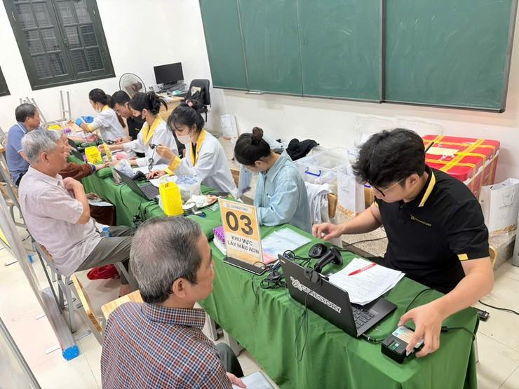
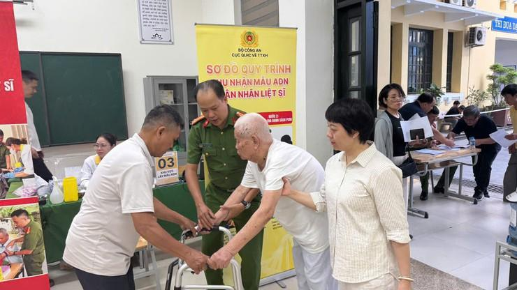
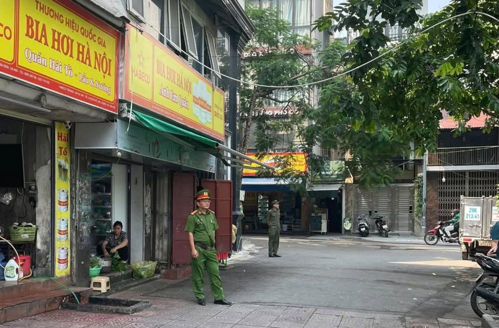
Đảng mạnh là do chi bộ tốt.
Chi bộ tốt là do các đảng viên đều tốt
Chủ tịch Hồ Chí Minh từng khẳng định: “Đảng mạnh là do chi bộ tốt. Chi bộ tốt là do các đảng viên đều tốt”. Thấm nhuần lời dạy của Bác, các chi bộ đã cụ thể hóa việc học tập và thực hành theo Bác bằng những mô hình thiết thực, gắn với nhiệm vụ chính trị và đời sống cộng đồng. Tiêu biểu, Chi bộ 8 triển khai tư vấn pháp luật cộng đồng; Chi bộ 9 xây dựng “Chi bộ số”; các Chi bộ 10, 16, 17 về thực hành tiết kiệm, sử dụng hiệu quả tài sản công, nhà sinh hoạt cộng đồng và khu tập thể dục thể thao ở TDP. Các chi bộ Ban Xây dựng Đảng, Văn phòng Đảng ủy, cơ quan Ủy ban MTTQ Việt Nam phường và Tổ dân phố 18 tổ chức sinh hoạt chuyên đề, cụ thể hóa việc học tập và thực hành theo Bác thành những hành động thiết thực, gắn với thực hiện nhiệm vụ chính trị và giải quyết các vấn đề từ thực tiễn công tác.
Ủy ban MTTQ phường tổ chức Hội nghị sơ kết công tác Mặt trận 9 tháng đầu năm, triển khai nhiệm vụ trọng tâm 3 tháng cuối năm 2026; đồng thời kiện toàn 27 ông, bà tham gia Ủy ban MTTQ Việt Nam phường khóa I, nhiệm kỳ 2025–2030.
Hưởng ứng Tháng cao điểm “Vì người nghèo” năm 2026, Ủy ban MTTQ Việt Nam phường tổ chức phát động ủng hộ Quỹ “Vì Người nghèo” và các hoạt động an sinh xã hội, với tổng số tiền đăng ký đạt 726,53 triệu đồng. Dịp này, Ủy ban MTTQ Việt Nam phường trao Thư cảm ơn các tập thể tích cực đồng hành, ủng hộ chương trình và trao 36 suất quà tặng các gia đình có hoàn cảnh khó khăn, với tổng kinh phí gần 50 triệu đồng.
Hướng tới kỷ niệm 72 năm Ngày Giải phóng Thủ đô và 96 năm Ngày thành lập Hội Liên hiệp Phụ nữ Việt Nam (20/10/1930 - 20/10/2026), Hội LHPN phường tổ chức nhiều hoạt động ý nghĩa. Sáng 10/10, 200 cán bộ, hội viên phụ nữ tham gia đồng diễn dân vũ tại các vườn hoa trên địa bàn. Hội tổ chức tham quan, sinh hoạt chính trị tại Di tích lịch sử Nhà tù Hỏa Lò; liên hoan nghệ thuật quần chúng “Giai điệu tự hào”, biểu dương 10 phụ nữ Ba Đình tiêu biểu. Hội cũng ra mắt mô hình “Gia đình phụ nữ số” với 72 gia đình, kênh trực tuyến “Lắng nghe phụ nữ nói” và tổ chức đối thoại trong khuôn khổ “Tháng nghe phụ nữ nói”. Ra mắt ấn phẩm điện tử Phụ nữ Ba Đình tháng 10/2026 với chủ đề “Tự hào tiếp bước tương lai”.
Nhân dịp này, Ban Vì sự tiến bộ của phụ nữ phường gặp mặt các nữ cán bộ chủ chốt. Tại chương trình, lãnh đạo Đảng ủy, HĐND, UBND và Ủy ban MTTQ Việt Nam phường tặng hoa chúc mừng UBND phường, Hội Liên hiệp Phụ nữ Việt Nam phường và trao quà tới các nữ cán bộ chủ chốt.
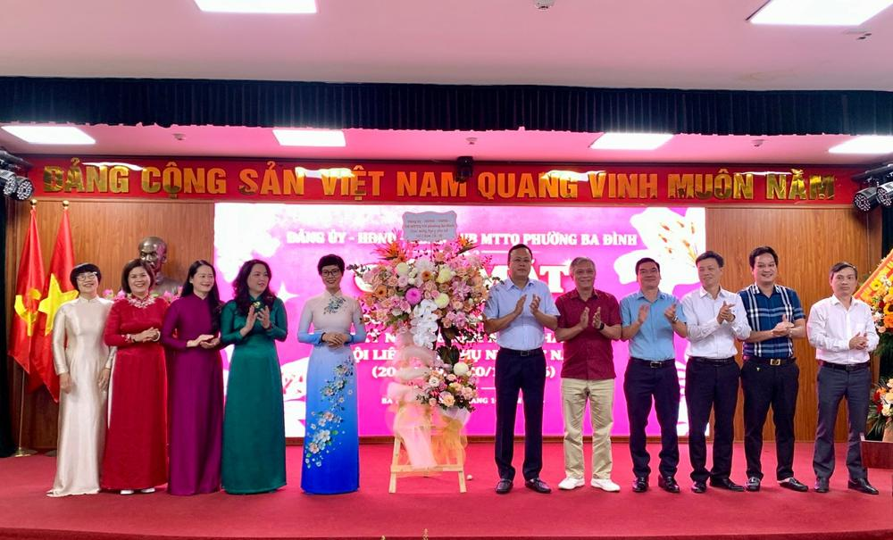
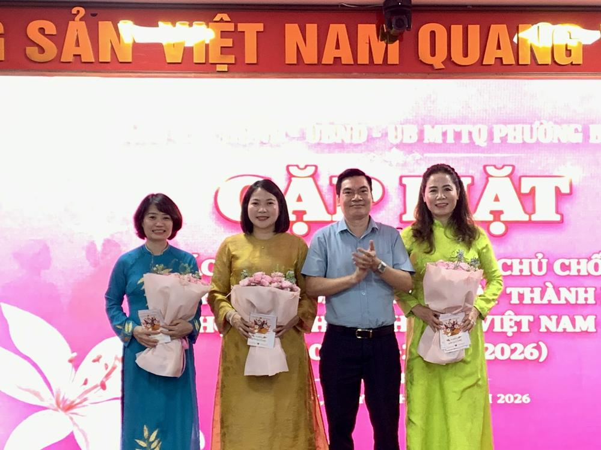
Đoàn TNCS Hồ Chí Minh phường tổ chức Hội nghị tổng kết công tác Đội và phong trào thiếu nhi năm học 2025–2026, triển khai nhiệm vụ năm học 2026–2027; biểu dương các tập thể, cá nhân tiêu biểu và kiện toàn tổ chức Đoàn – Đội tại các trường học trên địa bàn. Phối hợp với Hội LHTN Việt Nam các phường Tây Hồ, Ngọc Hà tổ chức kỷ niệm 70 năm Ngày truyền thống Hội LHTN Việt Nam (15/10/1956–15/10/2026) và Trại huấn luyện Nguyễn Chí Thanh không tập trung năm 2026 với 04 đội, 60 trại sinh tham gia, trải qua 05 trạm huấn luyện tại các di tích lịch sử, địa chỉ đỏ. Đồng thời, phối hợp với Ban Chỉ huy Quân sự phường tổ chức chương trình gặp mặt, tọa đàm “80 năm – Vinh quang, tự hào người chiến sĩ Thủ đô”, góp phần tuyên truyền, giáo dục truyền thống cách mạng, khơi dậy niềm tự hào về truyền thống vẻ vang của lực lượng vũ trang Thủ đô trong cán bộ, đoàn viên, thanh niên.
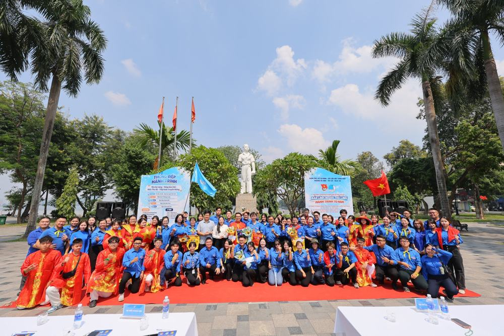
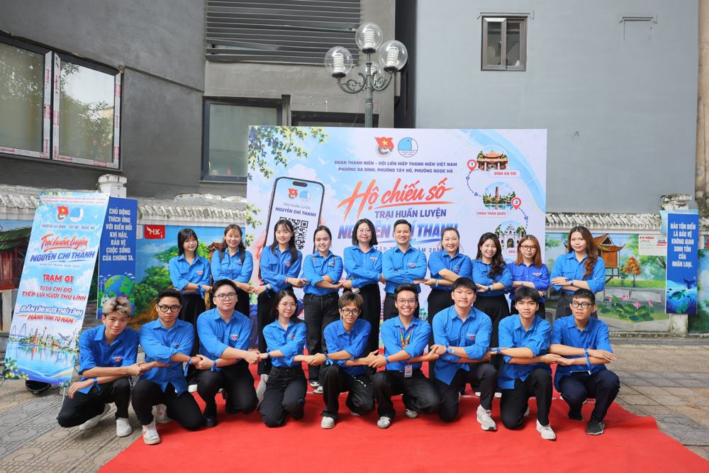
Hưởng ứng “Tháng Áo dài Hà Nội năm 2026”, nhân kỷ niệm Ngày Phụ nữ Việt Nam 20/10, cán bộ, đoàn viên Công đoàn phường tham gia chương trình trải nghiệm “Tour yêu nước – Không gian bao cấp” tại Chạm Collective (số 11 Ngũ Xã). Hoạt động góp phần lan tỏa nét đẹp văn hóa truyền thống, khơi dậy niềm tự hào về lịch sử, đồng thời tạo không khí giao lưu, gắn kết trong đội ngũ cán bộ, đoàn viên Công đoàn.
Hội Cựu chiến binh phường phối hợp với BCH Quân sự và Đoàn TN phường tổ chức sinh hoạt truyền thống tại các trường học nhân dịp kỷ niệm 80 năm ngày truyền thống lực lượng vũ trang Thủ đô.
Từ thực tiễn tại TDP số 6 cũ, mô hình “Tổ dân phố Ba nhất về an ninh, trật tự” đã phát huy hiệu quả, góp phần củng cố đoàn kết toàn dân, nâng cao ý thức tự phòng, tự quản, bảo vệ của Nhân dân, giữ vững ổn định an ninh trật tự ngay từ cơ sở. Phát huy kết quả đó, Công an phường đề xuất tiếp tục triển khai mô hình tại Chi bộ TDP số 1 mới, tập trung thực hiện ba tiêu chí: “Đoàn kết nhất - An toàn nhất - Phong trào toàn dân bảo vệ an ninh Tổ quốc tốt nhất”.
Rà soát 15 nhiệm vụ Thành phố giao, 82 chỉ tiêu phát triển kinh tế - xã hội, phấn đấu hoàn thành vượt mức các chỉ tiêu năm 2026.
Tiếp tục nghiên cứu, học tập, quán triệt, tuyên truyền, triển khai thực hiện Nghị quyết Trung ương 4 khóa XIV và các kế hoạch, chương trình hành động của Ban Thường vụ Thành ủy, Đảng ủy phường thực hiện Nghị quyết Trung ương 4, khóa XIV.
Tổ chức chu đáo Lễ trao Huy hiệu Đảng đợt 7/11. Hoàn thiện danh mục vị trí việc làm trong hệ thống chính trị gắn với xây dựng đội ngũ cán bộ. Tiếp tục triển khai rà soát, làm sạch, chuẩn hóa, đối soát dữ liệu đảng viên trên ứng dụng Sổ tay đảng viên điện tử. Triển khai đánh giá, xếp loại tổ chức đảng, đảng viên năm 2026.
Giữ vững an ninh chính trị, trật tự an toàn xã hội. Tăng cường công tác phòng, chống tội phạm, PCCC, bảo đảm trật tự đô thị. Chuẩn bị công tác tuyển quân năm 2027. Tổ chức tốt các hoạt động kỷ niệm Ngày Nhà giáo Việt Nam 20/11. Tích cực tham gia cuộc thi trực tuyến tìm hiểu quy định pháp luật về công tác tuyên truyền, phổ biến, giáo dục pháp luật và hòa giải ở cơ sở do UBND phường tổ chức.
Tổ chức Ngày hội Đại đoàn kết toàn dân tộc, các hoạt động kỷ niệm 96 năm Ngày truyền thống MTTQ Việt Nam 18/11 và Ngày Văn hóa Việt Nam 24/11. Tiếp tục vận động Quỹ “Vì người nghèo”. Chỉ đạo các tổ chức chính trị - xã hội, các Hội quần chúng tổ chức bình xét, đánh giá thi đua năm 2026.
Những điều tốt đẹp luôn được lan tỏa để Ba Đình ngày càng tỏa sáng!
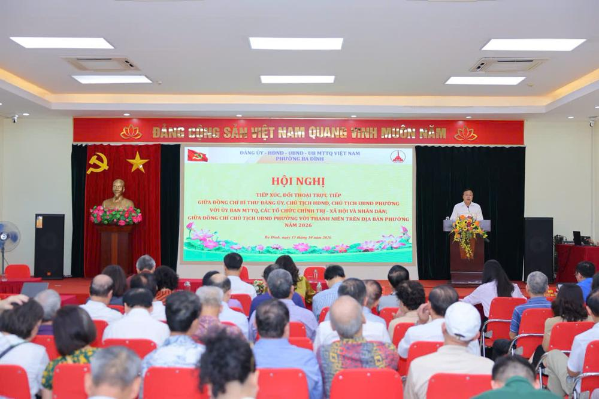
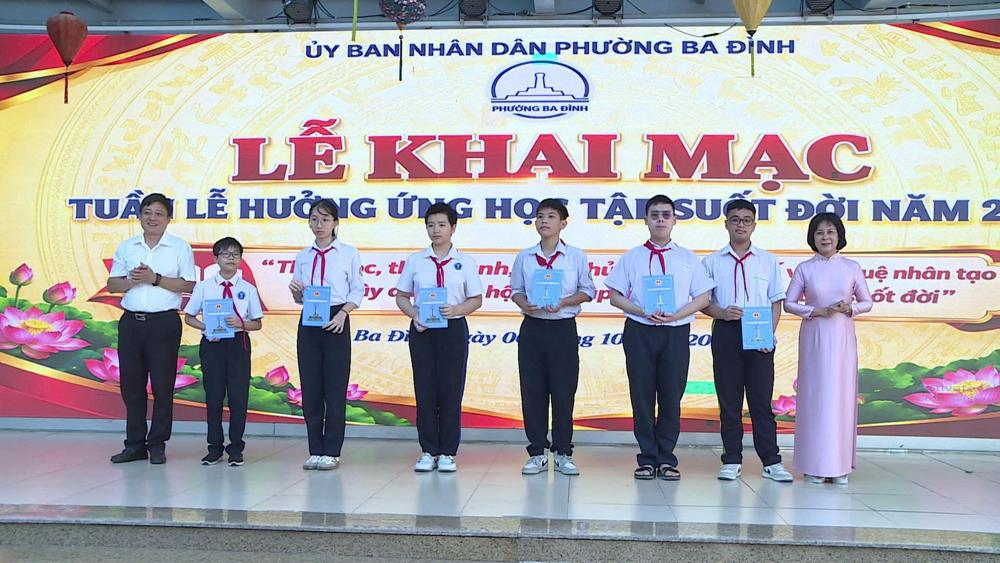
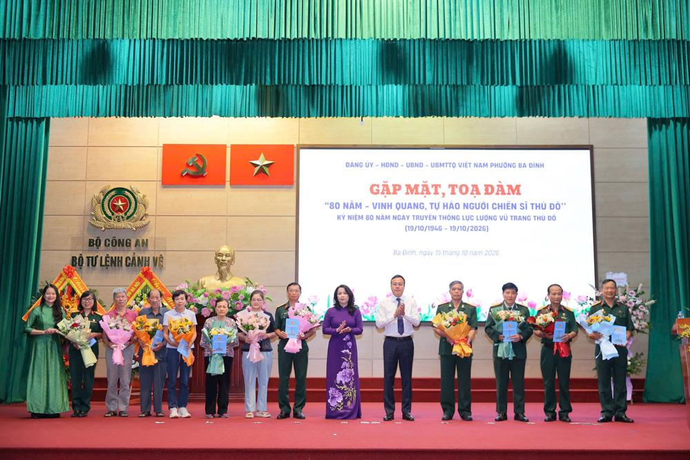